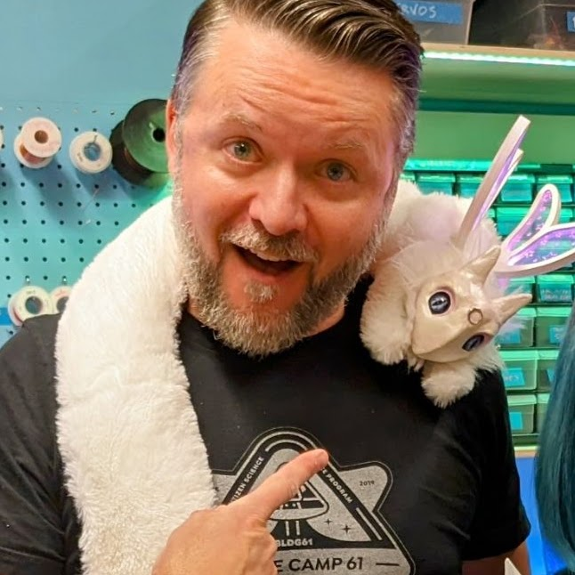

The BTU “Mischief Makers”
Make your Mischief!
Use this directory to contact BTU staff about your interests or questions. Next to each person's image, is a list of things they can help you with, and their contact information. Reach out! We love to help.
Become part of the team! Email Zack Weaver if you're interested in sharing your skills with the community.

Zack Weaver | Director
Director, BTU Lab | Assistant Teaching Professor, ATLAS Institute.
I am a wizard with:
- General Tools
- Wood Shop
- Sewing & Textiles
- Electronics
- Lasers (Lazor Wizard)
- 3D Printing
- Shaper CNC
- Way, way more
Fall 2026 Staff
-
Bella Consentino | Staff
Undergraduate Student, ATLAS Institute
My skills include:
- Woodshop
- Electronics
- Lasers (Lazor Wizard)
- Soldering
- General Tools
- Sewing
- 3D printing
- 3D modeling (SketchUp & Blender specifically)
- Most of Adobe Suite
- Programming (C++, Python, JavaScript, Godot, +more)
- Being fitted up
-
Keturah Dunn | Staff
Undergraduate Student, ATLAS Institute
President, CU3D | Head 3D Printing Wizard
My skills include:
- 3D printing (including multicolor printing!)
- 3D modeling
- Basic Sewing
-
Vani Chhay | Staff
Undergraduate Student, ATLAS Institute
My skills include:
- General tools
- Lasers (Lazor Wizard)
- Electronics/Circuits
- Prototyping/ Design
- 3D printing
- Soldering
- Programming ( Arduino (C++) , Processing (JS, Python)
- Sewing
- Overwatch
-
Terri Hughes | Staff
(O.G. Kai's sister!)
Undergraduate Student, CMCI
My skills include:
- General Tools
- Sewing (Hand stitch + Machine)
- Dyeing Fabrics
- 3D Modeling (Autodesk Inventor)
- 3D Printing
- Woodshop Tools
- Chain Making (Chain Jewelry/Spikes/Studs)
- Soldering
- Telling you only the things you want to hear
-
Leo Heuring
Undergraduate Student, ATLAS Institute
My skills include:
- 3D Printing (Ask if you want to try something fun on one of the CU3D printers!)
- 3D Modeling
- CAD (Solidworks)
- Electronics
- Soldering
- Basic PCB design and assembly
- Programming (Python, Arduino)
- Fabrication
-
Sage Morgan-LaRosa
Undergraduate Student, ATLAS Institute
sage.morgan-larosa@colorado.edu
Sik Skillz
- 3d modeling (Mostly blender, Sketch up)
- 3d printing
- Coding (C++, Java, Python, typescript, Css)
- General electronics
- General tools
- The vast void of nerdem
Volunteer & Emeritus Mischief Makers
-
Danny Rankin
Director, Whaaat!? Lab | Assistant Teaching Professor, ATLAS Institute.
My skills include:
- Woodworking
- General shop skills
- Laser-cutting (Lazor Wizard)
- Installation design
- Custom game controllers
-
Autumn Davis
Undergraduate Student, ATLAS Institute
My SuperSkillz™ include:
- General Tools
- Sewing (Machine/Hand)
- Graphic Design & various design software
- Adobe Suite
- Semiotics stuff (yay!)
- Soldering
- Laser cutting
- Basic 3d printing/modeling help
-
Lucky Bonniwell
Undergraduate Student, ATLAS Institute
thatcher.bonniwell@colorado.edu
I can help you with:
- laser cutting
- woodworking
- general shop skills
- programming
- 3D modeling
- soldering
-
Yunessa Rodriguez
Undergraduate Students, ATLAS Institute
Yunessa.Rodriguez@colorado.edu
I can teach:
- Rhino
- 3D Printing
- Maybe sum laser cutter stuff
- Prototyping
- And more fun stuffs
-
Jacob Le Mons
Undergraduate Student, ATLAS Institute
My skills include:
- Design, Prototyping, Documentation
- General Tools
- Lasers
- 3D Modelling (Onshape, SketchUp) & Printing
- Electronics & Soldering
- Woodshop & Basic Metalworking
- Basic Sewing & Weaving
- Sketching & Graphic Design
- Programming (C++, Python, HTML, CSS, JS)
- Parkour, Skateboarding, Conversational Japanese
-
Pete Burke
Undergraduate Student, ATLAS Institute
My skills include:
- 3D Modeling (SketchUp, Blender)
- 3D Printing
- Woodworking
- General Tools
- Power Tools
- Adobe Suite
- Electronics
- Project Documentation
- Programming (C++, JS)
- Anything related to D&D
-
Elly Jensen
Undergraduate Student, ATLAS Institute
My skills include:
- Sewing
- Adobe creative suite
- Lasers (Lazor Wizard)
- 3D printing
- General tools
-
Krithik Ranjan
PhD Student, ATLAS Institute
I can help you with:
- Electronics
- Soldering
- Oscilloscope (or The Omniscient ElectrO Scope) and other electrical tools
- PCB design and assembly
-
Paul Bailey (pictured, left)
Graduate Student, ATLAS Institute
- Laser cutting at dawn (Lazor Wizard)
- Checking your 3D print at midnight
- GIS (Geographic Information Systems)
- Corel Draw
- Kinetic Sculpture Racing
- Human powered art vehicles
-
Sena Uctuk
Graduated!
Undergraduate Student, ATLAS Institute, Computer Science
sena.uctuk@colorado.edu | https://www.linkedin.com/in/suctuk/
Things I can help with:
- Prototyping/ modeling
- 3D printing
- Lasers (Lazor Wizard)
- Acrylic, Metal, and Wood Fabrication
- Soldering
- Electronics
- Basic sewing machine stuff
- Code: C++, WebDev, JS, Python
-
Arjun Ramachandran
Graduate Student, ATLAS Institute
arjun.ramachandran@colorado.edu
Things I'm good at:
- General Tools
- Electronics/Circuits
- Drawing/Sketching
- Rapid Prototyping/Fabrication
- Robotics
-
Bart Baker
Graduated!
Undergraduate Student, ATLAS Institute
bartholomew.baker@colorado.edu
I can make your life better in:
- Woodworking
- Fabrication
- Lasercutting
- Soldering
- Speakers
- Graphic Design
- Illustrator/InDesign
- All things music!
-
Xin Wen
PhD Student, ATLAS Institute
I am happy to help you with:
- Sewing & Textiles
- Electronics
- Lasers (Lazor Wizard)
- 3D Printing (I've done it elsewhere but still need to do the BTU 3D printing training)
- Programming
-
Ashley Stafford
Graduated! Spring '25 Staff
Undergraduate Student, ATLAS Institute
Things I know:
- General Tools
- Lasers (Lazor Wizard)
- Sewing
- 3D Printing
- Basic Electronics
- The Horrors
-
Kai Adamchak
Graduated!
Undergraduate Student, ATLAS Institute
Things I Can Help With:
- 3D modeling
- Adobe
- Procreate/Digital Art
- Prototyping
- Artsy Stuff
-
Sophie Berry
Graduated! Spring '25 Staff
Undergraduate Student, ATLAS Institute
Things I can help with:
- Prototyping/ modeling
- 3D printing
- Lasers (Lazor Wizard)
- General tools
- Soldering
- Electronics
- Basics sewing machine stuff
-
Kaya Walker
Graduated!
Undgergraduate Student, ATLAS Institute
I like to help people with:
- General Tools
- Sewing and Textiles
- LASERS!
- Electronics
- Ceramics
- ATLAS Social Media (LMK if you make cool things!)
-
Nefeli Hadjiyiannis
Graduated!
Undergraduate Student, ATLAS Institute
nefeli.hadjiyiannis@colorado.edu
Here to help you with:
- Sewing/Textiles
- 3D modeling
- Adobe & Animation
- Soldering
- Simple Electronics
- Programming
- General Tools
- Vibes
-
Andrew Widner
Graduated!
Undergraduate Student, CU3D President, ATLAS Ambassador
Head 3D Printer Wizard
Want to try something crazy on one of the CU3D printers? Have a material you’re not sure how to use? Want to learn how a 3D printer works? Reach out to me!
I would be happy to help with:
- Advanced 3D printing
- CAD (Fusion / OnShape)
- 3D modeling / Digital sculpting
- Model rendering / Animation
- Everything Blender
-
Quinn Pearson
Fall '24 Staff
Undergraduate Student, ATLAS Institute
I can help you with:
- Lasers!
- Electronics
- General tools
- Woodshop
- Soldering
- Creative problem solving
-
Perry Owens
Spring '24 Staff
Graduate Student, ATLAS Institute
I work magic with:
- Woodshop
- General Tools
- Lasers
- 3D modeling
-
Zoe Turner
Spring '24 Staff
Undergraduate, ENVD
Skills I can help you with:
- Textiles and sewing
- Laser cutting
- 3D Printing and Modeling
- Woodworking and hand tools
- Welding
- Photography
- Hand drawing and rendering
-
Atlas Zaina
Spring '24 Staff
Undergraduate Student, ATLAS Institute
I am a wizard with:
- General Tools
- Wood Shop
- Sewing & Textiles
- Lasers
- Funny little crafts and more!
-
Kai Hughes
I am so very good at:
- 3D printing and 3D modeling
- Digital art and graphic design
- Woodshop stuff
- Coding languages
- Mold making / casting
- Creating problems
- Solving problems
-
Jeremiah Klinkerman (image approximate)
Spring '24 Staff
Undergraduate, Dinosaur Studies
jeremiah.klinkerman@colorado.edu
Things I can help with:
- General Tools
- Wood Shop
- Sewing & Textiles
- 2D Drawing
- 3D Sculpture
- Dinosaurs & Rocks
-
Hunter Allen-Bonney
Graduate Student, ATLAS Institute
Hunter.allenbonney@colorado.edu
- Photography
- Documentation
- ATLAS Social Media
-
S Wu
Currently in Canada!
PhD Student, ATLAS Institute
Ask me about:
- Anything textiles/yarn
- Electronics + circuits
- General tools
- Debugging code
- Brainstorming + prototyping
- How to survive academic writing
- A strange smattering of many other things
-
McClain Martensen
Graduated!
Undergraduate Student, ATLAS Institute
Things I know:
- 3D printing
- 3D modelling
- Woodshop
- Electronics/Soldering
- Sewing/Textiles
- Prototyping
-
Gray Assi
Graduated!
CTD Undergraduate Student, ATLAS Institute
Ask me about:
- prototyping
- experience design
- sewing + textiles
- soldering + electronics
-
Hi! I'm Dover Horesh
Graduated!
Graduate Student, ATLAS Institute
I work magic with:
- Laser Cutter (Lazor Wizard)
- Wood Shop
- Sewing Machine
- Photography
-
Katie Gilchrist
Graduated!
Graduate Student, ATLAS Institute
I can do the things:
- Basic Tools
- Soldering & Electronics
- Code
- 3D Modeling
- More as I learn them!